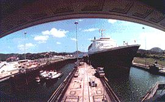

Canal de Panamá
El canal tiene una anchura que varia de 35 a 90 metros y una profundidad mínima de 12. Mide 64 kilómetros de una costa a otra y 81 kilómetros con sus prolongaciones hacia alta mar (la amplitud de las mareas en el Pacífico obligó a excavar un profundo canal, hasta cierta distancia de la costa, a fin de posibilitar el acceso en cualquier momento). Para el trazado se utilizó el curso de los ríos Chagres y el Grande, tributarios respectivamente, del mar de las Antillas y del Pacífico.
|  |
Con la construcción de enormes presas, como la de Gatún, sus valles se convirtieron en lagos (Gatún, Miraflores) unidos entre sí por el canal Guillard, de 12 kilómetros. El nivel del agua en el lago Gatún obligó a diseñar un sistema de esclusas, para hacer posible el tránsito entre los dos océanos. |
El barco que inicie el cruce del canal en el océano Atlántico entra al mismo por el puerto de Cristóbal, de donde parte a la primera esclusa, la de Gatún. En realidad, la esclusa es una sección del canal en forma de piscina alargada con compuertas a ambos lados.
Estas compuertas se abren para dar entrada al barco, una vez dentro de la esclusa, se cierran las compuertas y se eleva el nivel del agua dentro de esta, lo que hace subir el barco hasta la altura del nivel mínimo del agua de la segunda esclusa. El procedimiento se repite hasta que el agua aumenta a su nivel máximo de 28.5 metros sobre el nivel del mar. Entonces, las ultimas compuertas se abren ya directamente sobre el lago Gatún, para que el barco navegue en sus aguas.
Una vez en el lago Gatún, el barco continúa por el sur del río Grande y el Corte de Culebra hasta llegar a la esclusa de Pedro Miguel, donde con un procedimiento similar al descrito, pero a la inversa, el barco desciende. El barco encuentra las dos últimas esclusas del Canal (las de Miraflores) que lo hacen descender hasta el nivel de las aguas del océano Pacifico, al que entra por el puerto de Balboa.
A su paso por las esclusas, los barcos son remolcados por pequeñas locomotoras eléctricas, llamadas popularmente mulas, que ruedan sobre carriles construidos a ambos lados.
De esta forma se vence la diferencia de niveles entre las aguas de los océanos y las del lago Gatún, que es como promedio de sólo unos 30 centímetros.
Las obras del Canal se iniciaron en 1881, bajo la dirección de Ferdinand Lesseps, y fueron terminadas en 1914, después de ser traspasada la concesión a EE UU. La reivindicación de la soberanía panameña sobre el Canal fue una constante de la política gubernamental hasta 1977, en que se firman los acuerdos Torrijos-Carter, los cuales establecen la devolución progresiva de la Zona del Canal a Panamá en un plazo que termina el 31 de Diciembre de 1999
>> regresar